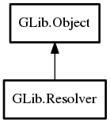

Resolver
Object Hierarchy:

Description:
public class Resolver :
Object
Content:
Static methods:
Creation methods:
Methods:
- public virtual string lookup_by_address (InetAddress address, Cancellable? cancellable = null) throws Error
Synchronously reverse-resolves address to determine its
associated hostname.
- public virtual async string lookup_by_address_async (InetAddress address, Cancellable? cancellable = null) throws Error
Begins asynchronously reverse-resolving address to
determine its associated hostname, and eventually calls callback, which must call
lookup_by_address_async.end to get the final result.
- public virtual List<InetAddress> lookup_by_name (string hostname, Cancellable? cancellable = null) throws Error
Synchronously resolves hostname to determine its
associated IP address(es).
- public virtual async List<InetAddress> lookup_by_name_async (string hostname, Cancellable? cancellable = null) throws Error
Begins asynchronously resolving hostname to determine its
associated IP address(es), and eventually calls callback, which must call
lookup_by_name_async.end to get the result.
- public virtual List<Variant> lookup_records (string rrname, ResolverRecordType record_type, Cancellable? cancellable = null) throws Error
Synchronously performs a DNS record lookup for the given rrname
and returns a list of records as Variant tuples.
- public virtual async List<Variant> lookup_records_async (string rrname, ResolverRecordType record_type, Cancellable? cancellable = null) throws Error
Begins asynchronously performing a DNS lookup for the given
rrname, and eventually calls callback, which must call lookup_records_async.end
to get the final result.
- public List<SrvTarget> lookup_service (string service, string protocol, string domain, Cancellable? cancellable = null) throws Error
Synchronously performs a DNS SRV lookup for the given service
and protocol in the given domain and returns an array of
SrvTarget.
- public async List<SrvTarget> lookup_service_async (string service, string protocol, string domain, Cancellable? cancellable = null) throws Error
Begins asynchronously performing a DNS SRV lookup for the given
service and protocol in the given domain, and eventually calls callback, which must
call lookup_service_async.end to get the final result.
- public virtual List<SrvTarget> lookup_service_fn (string rrname, Cancellable? cancellable = null) throws Error
- public virtual async List<SrvTarget> lookup_service_fn_async (string rrname, Cancellable? cancellable = null)
- public void set_default ()
Sets this to be the application's
default resolver (reffing this, and unreffing the previous default resolver, if any).
Signals:
Inherited Members:
All known members inherited from class GLib.Object